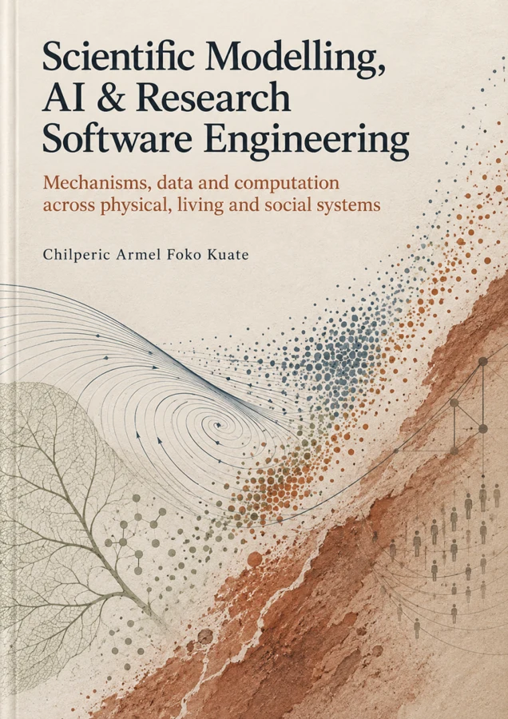

Plant growth
Carbon, water and nitrogen budgets across climate forcing, drought and explicit life cycles.
Build from equations, explore environmental change, and connect predictions to data. Keep the model, numerical choices and evidence in the same workspace.
Carbon, water and nitrogen budgets across climate forcing, drought and explicit life cycles.

Seasonal trait trade-offs alongside the original fitness, genetics and agent workflows.

Generation-resolved growth and death, plus the retained public T-cell research and stochastic tools.

Original 18-state FADNS and four-state metabolism models, with their equations and limitations intact.

Dice, trajectories, first-passage behavior and population branching with explicit random seeds.

Author your equations, inspect phase portraits, stability and conservative diffusion.
Original tools, data contracts and custom-model workflows remain directly accessible.

27 chapters, source sections and 54 worked practice solutions.
Read the public companion →